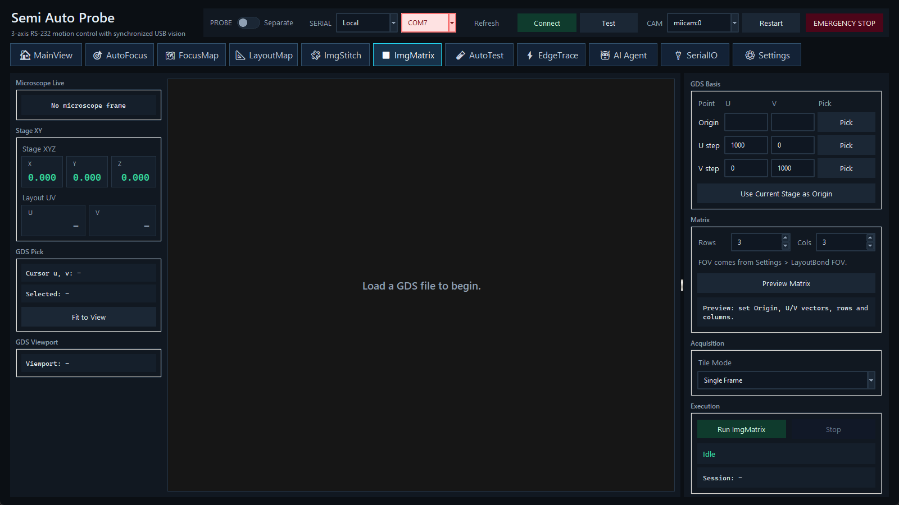

在 GDS 基向量定义的矩阵上采集独立图像，并保留可复现的 manifest。

ImgMatrix 用于按版图 U/V 网格逐点保存图像。与 ImgStitch 不同，它的主要产物是每点独立图像和 manifest，不要求生成连续 mosaic。
单击 Run 后，状态区显示当前点、总数与 session。任务在点间移动、等待稳定并保存图像；Stop 等当前阻塞动作返回后结束，保留 partial manifest，载台停在最后 tile。判断完整性时以 manifest 和 completed 数量为准。
每次运行创建唯一目录：
imgmatrix_session/
YYYYMMDD_HHMMSS[_NN]/
images/
rNNN_cNNN_u..._v....png
manifest.json
manifest.json 包含格式版本、时间戳、完成状态、矩阵设置及每张图像的坐标/文件信息。目录名若同秒冲突会增加编号，不会覆盖上一次独立 session。